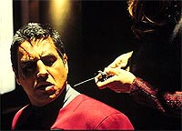
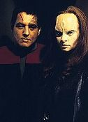
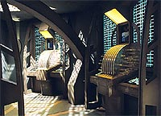
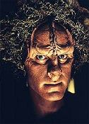
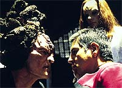

|
MANCHETE
DO EPISDIO
Seska mostra seu veneno e Chakotay
acorda para voltar a suas razes rebeldes
Episdio
anterior | Prximo
episdio
Sinopse:
Data Estelar: 49208.5.
Enquanto Chakotay e B'Elanna jogam hoverball no holodeck, a Voyager
recebe uma transmisso com um sinal da Frota Estelar. Animada pela
descoberta, a tripulao altera o curso para detectar a origem da
mensagem mas, ao chegar s coordenadas, atacada por uma nave
Kazon. Intrusos vm a bordo e conseguem roubar um dos mdulos de
transporte, retornando em seguida para sua nave.
 Tentando impedir
que a tecnologia caia nas mos do inimigo, a capit ativa o raio
trator e abre um canal. Quem responde Maje Culluh, o lder dos
Kazon-Nistrim. Ela o informa que o dispositivo em questo foi
projetado especificamente para a Voyager e ser de pouco uso para
os Kazon. Entretanto, o Maje assegura que atualizou seus
conhecimentos da tecnologia da Frota. Nesse momento, quem aparece
Seska, a tripulante que traiu a tripulao na temporada anterior.
Os Kazons conseguem desativar o raio trator e fogem em velocidade de
dobra.
As implicaes da aliana entre Seska e Culluh so claras. Os
kazons agora tm uma uma conselheira com experincia ttica da
Frota, dos maquis e cardassianos. Culluh planeja usar o mdulo
roubado para persuadir as faces rivais a ajud-lo na conquista
da Voyager. Chakotay conta a Torres que se sente responsvel pelas
aes de Seska porque a recrutou aos maquis e, em seguida, deixa a
nave para tentar recuperar o dispositivo por si prprio.
 O comandante
consegue se transportar para a ponte dos Kazons e destri o mdulo,
mas rapidamente capturado e torturado por Culluh, que busca os cdigos
de comando da Voyager. Chakotay no os revela.
Quando a Voyager chega para resgat-lo, outros Majes, reunidos com
o lder dos Nistrim, ordenam que os cdigos sejam usados para
desativar seus sistemas, mas logo fica claro que Culluh no os tem.
Seska consegue impedir que Chakotay seja transportado, ento
Janeway transporta os Majes Kazons a bordo. Eles concordam em
libertar o oficial e a nave auxiliar em troca de sua liberdade. Mais
tarde, Chakotay fica perplexo quando Seska o informa que enquanto
ele estava inconsciente, ela extraiu uma amostra de seu DNA e agora
est esperando um filho dele.
Comentrios:
"Maneuvers"
um episdio repleto de ao e cenas de batalha, marcando a
volta dos Kazons e de Seska, que a partir desse momento sero os
grandes viles da segunda temporada. Mas no poderiam faltar as crticas
a certos pontos da histria.
 Por exemplo, com
todo o arsenal que possui, por que a USS Voyager foi incapaz de
deter uma nica nave Kazon? E afinal, qual a daquela
nave-torpedo? Como os ocupantes poderiam sobreviver a tamanho
impacto? Tuvok que me perdoe, mas vale tambm destacar a incompetncia
da equipe de segurana, que no conseguiu conter dois intrusos
Kazons, que andaram livremente pelos corredores e chegaram sala
de transportes sem problemas. Outra coisa mal explicada: como Seska
teve acesso aos cdigos da Voyager? Os Kazons pareciam se adaptar
s modulaes nos escudos com mais rapidez que os Borgs! Mas, crticas
parte, essa sequncia inicial foi bastante agitada e garantia
certa de entretenimento.
Tuvok realmente no devia estar se sentindo muito bem nesse episdio,
pois tambm no detectou a sada no-autorizada de Chakotay. Alis,
o Vulcano foi a vtima de um dos maiores problemas de Voyager. A
cada episdio, parece que um dos tripulantes est ali s para
fazer bobagens. A "sndrome de incompetncia", criao
involuntria do seriado, costuma vitimar Chakotay. E, pelo incio
do episdio, parecia que ele seria mais uma vez o "bobo da
semana". Felizmente, as coisas se reverteram rapidamente e o
trofu acabou ficando com Tuvok.
 Chakotay, por outro
lado, brilha como em poucas vezes na srie. As cenas que precedem
sua abordagem nave Kazon e a porterior sesso de tortura e
interrogatrio sopram vida em um personagem que, via de regra,
acaba no fazendo mais que apertar botes em um console ao lado da
capit Janeway.
E por falar em Chakotay, foi bom ver sua identidade Maquis
reaflorando, quando ele decidiu tomar atitudes por si s, ignorando
os protocolos que regem a nave. Parece que em se tratando de Maquis,
o seriado ficou dormente no apenas na segunda temporada, mas nos
sete anos de Voyager, algo que gerou muitas crticas. Da a
comemorao quando aparecem lampejos assim. Mesmo assim, no final
ele coloca o rabinho entre as pernas diante de Janeway, o que
elimina parte de seu vigor rebelde e vingativo contra Seska
--possivelmente a melhor personagem recorrente que j passou por Voyager.
Foi bastante interessante esse reencontro com Seska, agora j com
leve aparncia Cardassiana. Os eventos relatados aqui teriam
impacto profundo no andamento do segundo ano, e culminariam no bom
episdio duplo "Basics", que fecharia a temporada.
 "Maneuvers"
inicia um dos perodos de maior continuidade do seriado, quando
surge uma espcie de minissrie centrada no conflito com os Kazons
--viles sem muito appeal, diga-se de passagem. Aqui, por exemplo,
a interao entre os lderes Kazons foi meio infantil, baseada em
ameaas e conversas inteis.
Mas todo o ambiente Kazon foi muito bem-construdo --no para
eles, que continuam mais paspalhos do que nunca, mas para Seska. A
influncia da Cardassiana sobre o Maje Culluh to visvel que
chega a arder a vista. Obra de um roteiro bem-escrito por Kenneth
Biller e uma direo competente (ou voc no reparou em vrias
cenas que o enquadramento mostrava Culluh em primeiro plano e Seska
atrs, quase como que comandando sua marionete Kazon?).
A soma de todos os elementos acaba produzindo um resultado
interessante. E foi bom saber que a nave auxiliar foi recuperada ao
final do episdio: uma a menos para aumentar a contagem de naves
infinitas de Voyager...
Citaes:
Chakotay - "Easy, B'Elanna.
It's just hoverball."
("Calma, B'Elanna. s hoverball.")
Seska - "As you can see, I'm in the process of restoring my
Cardassian fisiology."
("Como pode ver, estou no processo de restaurao da minha
fisiologia Cardassiana.")
Chakotay - "So now I'm getting advice about controlling my
emotions from you."
("Ento agora estou recebendo conselhos de como controlar
minhas emoes de voc.")
Trivia:
 Martha Hackett retorna como Seska. A
atriz interpretou o papel durante grande parte do primeiro ano sob
maquiagem de Bajoriana.
Martha Hackett retorna como Seska. A
atriz interpretou o papel durante grande parte do primeiro ano sob
maquiagem de Bajoriana.
Antes de embarcar na Voyager,
Hackett j havia encarnado outras personagens em Jornada:
fez uma Tareliana em "All Good Things...", episdio
final de A Nova Gerao, mas a cena foi cortada para a verso
final. Alm disso, interpretou a Romulana T'Rul em "The
Search, Parts I & II", da terceira temporada de Deep
Space Nine. Tambm cedeu seus talentos para o jogo "Star
Trek: Klingon".
Em entrevista dada em junho de 1996,
Martha disse: "Tem sido uma tima experincia. As sries de Jornada
no so como os outros shows --fazem parte da histria da televiso.
Significam algo especial para muitas pessoas e realmente do aos
telespectadores muito o que pensar. Ento, para mim, muito bom
fazer parte de Voyager. Jornada um fenmeno e
sempre tive bons momentos com a equipe e elenco durante as filmagens
da srie --e no d para pedir mais que isso!"
Mantendo uma continuidade no seriado,
tambm retorna o ator Anthony DeLongis como o Maje Culluh dos
Kazon-Nistrim, personagem introduzido em "State
of Flux", do primeiro ano.
Ficha
tcnica:
Escrito por Kenneth Biller
Direo de David Livingston
Exibido em 20/11/1995
Produo: 027
Elenco:
Kate Mulgrew como
Kathryn Janeway
Robert Beltran como Chakotay
Roxann Biggs-Dawson como B'Elanna Torres
Robert Duncan McNeill como Tom Paris
Jennifer Lien como Kes
Ethan Phillips como Neelix
Robert Picardo como Doutor
Tim Russ como Tuvok
Garrett Wang como Harry Kim
Elenco convidado:
Martha Hackett como Seska
Anthony De Longis como Culluh
Terry Lester como Haron
John Gegenhuber como Kelat
Episdio
anterior | Prximo
episdio
|